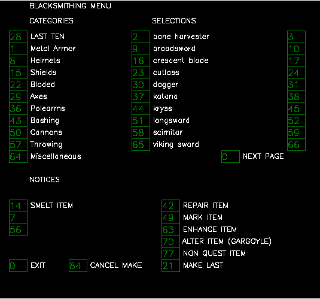

gRPC Tutorial
Among the various components of the Ultima Online game, in the case of Mobile and Item objects around Agent, their states can change over time. Futhermore, Agent can make changes to the elements of the game through various actions. UoService uses the using gRPC communication to exchange such real-time information between the C# and Python application.
The Proto file is needed to build the gRPC communication, the file is avilable from UoService.proto.
gRPC Message Type
This type includes the every mobile type object such as monster, npc, aminal, other player, and etc.
This data type is for saving the information of every type of items such as gold, portion, book, and etc.


Due to the use of items and skills, agent can have several different types of buff and debuff effects at the same time. This data is sent with the type, name, and duration of the effect when it starts.
This data type is used to store the information for the items of seller and buyer when buying or selling is selected from the NPC's pop up menu.

Players must click the NPC of around player to buy or sell items or learn skills. At the moment of clicking, a pop up menu data is included in the state.
 If the menu can be selected, the active data of GrpcPopupMenu is displayed as true.
If the menu can be selected, the active data of GrpcPopupMenu is displayed as true.
If the menu can be selected, the active data of GrpcPopupMenu is displayed as true.
In Ultima Online, there are cases where agent need to interact with the server in the form of an interactive dashboard including buttons. It is totaly differnt form from normal actions and states such as item objects or walks. For example, if you open a bank, you can see that not only the metal chest holding the item is opened, but also a dialog box named bank actions is opened together.
The dialog has a number of html text and buttons, and this gRPC data type serves to store the data of the corresponding control.
Due to the huge number of pixels, using the position of screen as action directly is really inefficient. However, we can project the any mouse input into a specific game event by using the multiple action arguments.
States
The base data type what we declare above section can be combined to represent the higher level game situation.
This data type is usually used to store the item of backpack, equipped by player, corpse of monster. Note that, this is the simpler than GrpcGameObject data type.
Because Ultima Online is a first-person game, everything is player-centric. This state contains a list of all items in the game that are updated as the player moves or acts.
First case are the items of backpack, and equipped of player. These two pieces of information continue to exist from the moment the player connects.
The state of the bank, shop, and corpse container items are included only when the player opens the container, and disappears from the information when it is closed
 When a monster in mobile type dies, it changes to an item type. In that case, this state include the inforamtion about dead body.
When a monster in mobile type dies, it changes to an item type. In that case, this state include the inforamtion about dead body.
When a monster in mobile type dies, it changes to an item type. In that case, this state include the inforamtion about dead body.
Similar to WorldItemList, but this state contains a list of all mobiles.
In Ultima Online, there are various mobiles that players can interact with, and one of them is a vendor that can purchase or sell items for a specific job. In case of these, it must be distinguished by job name included in title information of GrpcMobileObject rather than name.
Another type of mobile is a monster that the player battles to obtain XP or items. Unlike NPCs in town, the notorietyFlag of GrpcMobileObject basically starts from 3(grey).
 The player can learn various types of skills up to a total of 700, and must interact with certain NPCs in the village.
The player can learn various types of skills up to a total of 700, and must interact with certain NPCs in the village.
The player can learn various types of skills up to a total of 700, and must interact with certain NPCs in the village.
Players must click the NPC of around player to buy or sell items or learn skills. At the moment of clicking, a pop up menu data is included in the state.
If the menu can be selected, the active data of GrpcPopupMenu is displayed as true.
The speech of NPC consists of multiple sentence even if it looks like a one sentence in game. Therefore, old cliloc text should be kept for a certain period of time(50 is default length)

When a gump that interacts with the server is created, the unique serial number and size of the corresponding gump, as well as information about controls, are transmitted from the server. Send this information along with the response to the corresponding gump so that the server can recognize the response to the gump and execute the corresponding action.
This state is a gRPC message to send all information transmitted when gump is created to the Python side. Because the button and html text are not transmitted in pairs, they need to be visually reconstructed using the x, y, and page number of the control.

Actions
© Original page design come from GodotAIGym.